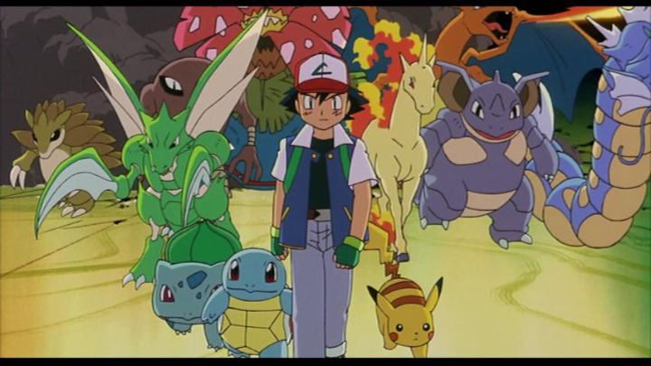

Disclaimer: This review covers "Pokemon - The First Movie," released in Japan in 1998 and in the USA in 1999, also known by alternative titles "Pokemon - The Movie" and "Pokemon - The Movie - Mewtwo Strikes Back." Not related to the final review scores, additional notes on sequel films "Pokemon - The Movie - 2000" ("The Power of One") and "Pokemon - The Movie 3" ("Spell of the Unknown") are included.I'm a 90's kid. I grew up on Saturday morning cartoons, and at a time when Japanese anime and video games were just becoming mainstream, and a time when they were catered specifically to young audiences. "Pokemon" and "Digimon" defined my childhood, as well as shows like "DragonBall Z," "Beyblade" and "Yu-Gi-Oh." Things were so much simpler then... good times. That makes my review on "Pokemon - The First Movie" heavily filled with bias. I saw it in the movie theater when it first came out pre-2000: I don't recall if it was a one-night film or a wide release, but as a kid, I didn't know the difference and was excited to make my parents take me. I remember the free exclusive Pokemon trading card I got for going, and the second one I got in the VHS release. I have similar memories for "Digimon - The Movie," but that film has yet to be re-released for modern audiences, remaining long out of print (and it was so heavily edited for American audiences, it might be better forgotten anyhow). But today, the Pokemon movies are easy to find... at least, in their American forms, featuring the 4KIDS English dub cast. The first three movies can even be found on Bluray! Do keep in mind that the original, unrelated short films aren't included, so you might want to keep your original VHS or DVD if you ever want to watch "Pikachu's Vacation" again. If you've never seen it, you can be assurred it doesn't matter much to the main feature, and was just a fun diversion to extend the relatively short run time of the movie.It's natural to assume that any feature film based on a shonen or children's anime won't be all that good. And for me, nostalgia definitely plays a factor. I can recall friends in my age group, decades after Pokemon hit its peak, able to still recite most of the original 150 Pokemon by memory. In the movie, I can't help but smile when I hear Ash Ketchum's English voice, or hear his main Pokemon Pickachu squeel "pika-pi!" Even more subtle nods to the game and television show, like the narrator's voice and a reference to the "Who's That Pokemon" commercial-break game, make me feel warm inside. And I'm willing to put money down to bet that if you were to show "Pokemon - The First Movie" to a group of people in their mid-20's today (circa 2020), they'd all at least hum to the English theme song when it plays near the beginning. If you want an example of what to give an audience in an adaptation of their favorite tv show, THIS is it.Yes, I admit nostalgia boosted my score a bit. But despite that, I want to argue that "Pokemon - The First Movie" is actually a good movie. Not a great one, but a good one. Even if you don't know the difference between a Charmander and a Geodude, you should be willing to admit that this movie stands up well against other "classic" anime films from the 90's, like "Street Fighter II"... I'm ignoring a few other critical successes, but my point is you don't need critical success to be labeled a classic. "Pokemon - The First Movie" has an original subtitle of "Mewtwo Strikes Back," likely removed from marketing in America to avoid confusing parents buying the tickets. The story is all about Mewtwo, the fabled clone Pokemon from the original games and anime series, referenced only briefly in those mediums. Here, his backstory is fleshed out: he's a clone from DNA of Mew, a long-assumed extinct Psychic-type Pokemon, given the label of 151, outside the original index list. Created in a lab funded by Giovanni, the ambitious Gym Leader, Mewtwo is not simply a clone, but one more powerful than Mew, built to be super-intelligent and super-powerful. Naturally, when Mewtwo first awakes, with the ability to think and communicate with humans, his first question is "Who am I?" and "What is my purpose?" Disappointed and ashamed to be used as a tool by humans who don't care about him, he rebels and escapes, with a hatred for humanity and for any Pokemon ignorant enough to think they could be friends with them. Skip forward, and we see Ash, Misty and Brock traveling to be "the very best, like no one ever was." They get a mysterious invitation to travel to a mysterious island, where only the strongest trainers and Pokemon can gather. When they brave a storm to get there, they find Mewtwo, claiming himself to be the world's greatest Pokemon Master. His plan is to use the Pokemon from the handful of trainers that get there, and clone them: he'll amass an army of the world's most powerful Pokemon, and use his psychic powers to cause a storm to destroy the rest of the Pokemon and human race outside the island, becoming a symbol for Noah or Moses, leading himself and his clones to a free, peaceful world. Naturally, Ash and the others, including their Pokemon, won't stand for their plan, and argue with words to convince Mewtew that he's wrong. Also, the originals fight the clones to prove themselves (standard anime plot: whoever punches harder wins complex arguements). Even Mew shows up, a surprise to everyone, and an opportunity to see Mew and Mewtwo finally decide which is stronger. It's a very simple, but emotionally effective plot, ideal for a kid's action movie. In later scenes, I dare you not to cry when Pikachu desparately tries to flee from the evil Pokeball drones, or in the climax when Ash falls victim to the final battle. It manages to successfully balance a story arc of adventure, action and mystery, without losing anyone in their younger audience. Even adults who couldn't care less about "Chinese-cartoons" would be at least a little engaged here.There are a few places where purists can complain, especially regarding the English release. Apparently, an extra 10-minutes of prologue was cut, which sounds interesting from online descriptions, but the final American version already wastes enough time on the prologue before the title screen appears, that I'd forgive this and be thankful for the shorter runtime. In a few instances (including one very obvious one), the English dub misnames a Pokemon, a frustrating mistake, but only one that hardcore fans will notice. A bunch of generic English pop songs were added near the end, a shame since the soundtrack was already doing great on its own, but really, no 90's family film would feel the same without that mislead advertising ploy. Another common complaint is the film's overall theme of anti-violence, in a series that revolves around Pokemon battles. But the show was always against animal violence and hatred, and this film perfectly follows suit. The difference can be compared to live-action boxers: it's a violent sport, but a refereed one, and one about the spirit of competition and training, rather than bloodthirst and desire to kill or eliminate the opponent. The same logic applies to Pokemon, and to why the situations in "The First Movie" are so dire.From a production standpoint, the film looks similar to the original series, with only a slight improvement to camera layouts and environments. As a kid, I'd be annoyed if a movie looked too different from the original show, and appreciate the faithful attitude today, but the show never looked particularly great. For that matter, even the countless series and films to follow don't look much better: even a recent CGI remake if this same movie looks rather crude! Anyway, I appreciate the director making the most of the shots within a low budget, some of which follow tried-and-true rules of filmmaking that modern directors too often ignore. The same can be said for the soundtrack, a cinematic score that recalls the tv show, but also portrays what happens on screen just as much as the visual do. The 4KIDS English dub is... bad, but in a lovable way, with some creative license allowing for a few great jokes from Team Rocket in the background. Again, as a fan of the show, I wouldn't dare accept a dub that sounded any different. I won't bother to review any of the other Pokemon films in detail, but I'll mention the two immediate sequels that were included on the Bluray disc for the first movie: "Pokemon 2000" and "Pokemon 3." "2000" has a weaker story, feeling like an extended mission out of the kid-friendly video games, but for similar reasons is more fun than the others. Aside from a weak human antagonist ("The Collector," a poor metaphor for fans of the Pokemon Trading Card game), it features the three legendary bird Pokemon from the original games, plus a new legendary bird to rule them all, Lugia; it's significant enough to original fans without forcing down too much from the new generations to bother that demographic. More English dub jokes from Team Rocket and a quick Weird Al Yankovich Pokemon polka in the credits make it worth watching. "Pokemon 3" is a darker story about disillusionment, not featuring a clone or legend, but a mythical Pokemon named Entei and the "Unknown." While one could argue the story is "better," I felt it was out of place for the Pokemon franchise, feeling much more like something another anime franchise might use, like "Naruto" or "One Piece." Not to mention that it fully embraces the new generation, introduced in games "Gold" and "Silver," the first of multiple expansions. Overall, "The First Movie" is the most well-rounded of the three, and the only one I'd dare call a classic, but die-hard Poke-fans will find something to enjoy in each of them. When "Pokemon - The First Movie" originally came out, I remember it was simply referred to as "The Movie," without the extra "First" wording. But in Japan, the success ensured a sequel would already be in development; by the time "The First Movie" was released in America, they could already include a trailer. It was around that point that I started to drop off as a fan: I wasn't eager to learn yet "more" Pokemon on top of the original 150, and saw that there was no ending in sight for Ash's journey to be a Pokemon Master. Even with the same successful themes at work, the tv show (and now, over a dozen feature-length films) have outstayed their welcome. But I'll always have fond memories for "The First Movie," which is as good as a Pokemon film could be, and a legitimately good family anime film too. That's a conclusion I'd be happy to fight you for.
- "Ani" More reviews can be found at : https://2danicritic.github.io/ Previous review: review_Pocahontas Next review: review_Pom_Poko